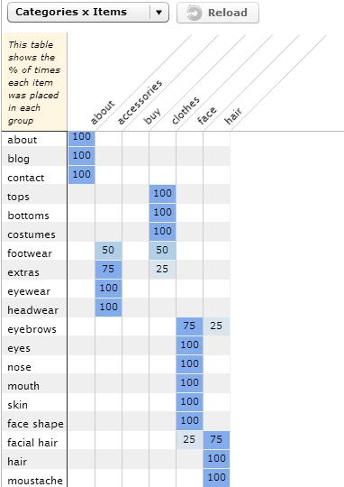
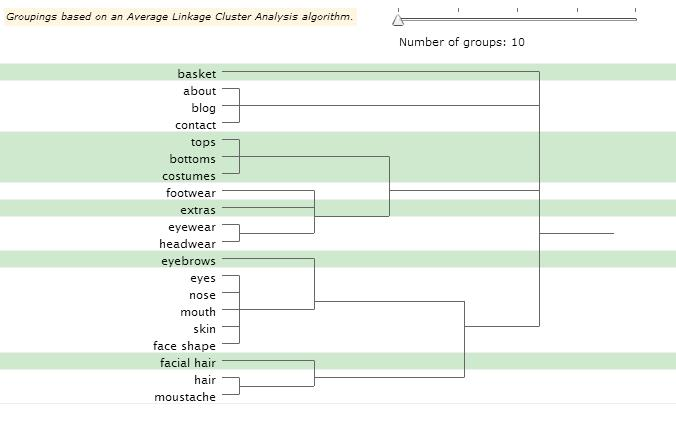

Card sorting is a quick, inexpensive, and reliable method, which serves as input into your information design process. Card sorting generates an overall structure for your information, as well as suggestions for navigation, menus, and possible taxonomies. Card sorting is a user-centered design method for increasing a system’s findability. The process involves sorting a series of cards, each labeled with a piece of content or functionality, into groups that make sense to users or participants. Closed Card Sorting: Participants are given cards showing site content with an established initial set of primary groups. Participants are asked to place cards into these pre-established primary groups. Closed card sorting is useful when adding new content to an existing structure, or for gaining additional feedback after an open card sort.
Below are the statistics for foldable.me website. There are some discrepencies in categorizing footwear, extras, eyebrows and facial hair. I put footwear and extras under 'accessories' and eyebrows and facial hair under 'face' category.

This is a Tree graph.
